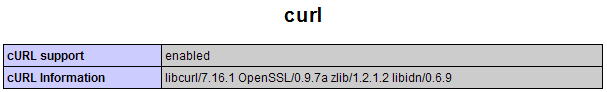

Installing the Google Weather module usually ends up with 2 possibilities: either you get it up and running in 1 minute, or you only see the spinning circle.
So what should you do when you only see a spinning circle?
How to Make it Work
First of all, let me "pre-warn" you that making it work may require a bit of patience on your part. It's not as straight forward as we all like it to be --- mainly because Joomla modules are not iPhone apps. Each Joomla module does not run in its own application space. As such, conflicts are so common in Joomla. There can be conflicts between different modules, with other plugins, or even with the Joomla template that you are using. This is complicated by the fact that Joomla does not offer any form of debugging tools that tell you which are the two modules or plugins that are in conflict.
If you feel that this might be the ONE that you need, and you are determined to make it work, then let's roll up our sleeves and start working.
Step 1: Check if your server has the cURL library installed
Create a .php file somewhere on your server with the following PHP statements:<?php phpinfo(); ?>
Now run the .php file. If your PHP has the cURL library installed, you should see something similar to the following:

If you don't have the cURL library, there are numerous resources on the Internet that gives you very clear instructions on how to install cURL on various platform such as windows, linux, etc.
Bottom Line: You need to have the cURL library installed for the Google Weather module to work.
DO NOT move to Step 2 unless you have verified that the cURL library is up and running on your server.
Step 2: Check if it's Conflicts with other Modules or Plugins
There are just too many possibilities in Joomla that could result in the spinning circle. So we have to isolate each variable one by one.
In this step, we will try to see if it's conflicts with other modules or plugins.
The only surest way to ascertain this is to test the module on a fresh install of Joomla - with nothing else installed and using the default Joomla template. This will eliminate all other variables. Make sure you use the default Joomla template, and NOT any other templates. This is because today's modern templates use many javascript libraries such as mootools and jquery - which can cause conflicts with other plugins.
- Install a fresh copy of Joomla somewhere on my site.
- Install just the Google Weather module.
- Don't forget to Publish the module so that it's active.
Publish the module to a module position and load the page. Is it working? Or do you still see the spinning circle?
If you still see the spinning circle, then it means it's not conflicts with other modules or plugins. Please continue with Step 3.
If it works, it means the Google Weather module works on your machine with the default Joomla settings => which means it's conflicts with other modules or plugins. If this is the case, then you can do the following:
- Change the Joomla template to your desired template. Does it still work? If it doesn't, then it means it's conflicts with your Joomla template.
- If (1) is ok, start adding the other plugins and modules one by one until you find which is the one that causes the conflict. Yes, ONE BY ONE. I know this is a primitive and very time-consuming method. But given the fact that Joomla does not provide any debugging tools to tell you which are the conflicting modules, at least this method will always get the job done to help you find the module that's causing the problem.
Step 3: Add some Debugging Codes to mod_kksouGoogleWeather.php
We need to add some debugging codes to give us more clues as to where might be the problem.
- Assuming you are using the latest version: mod_kksouGoogleWeather v1.55
- Go to the following folder in your Joomla root folder:
modules/mod_kksouGoogleWeather_v1.55 - Edit the file: mod_kksouGoogleWeather.php
- In line 26, add the following:
- The surrounding block should look like this:
- Reload the page containing the Google Weather module. You should see 3 lines of debugging info on your screen, each line beginning with "bp1", "bp2" and "bp3" respectively.
- Please tell me the contents of these 3 lines - in the forum or via email.
- After you have copied the debugging info, you may comment out these 3 lines first so that the debugging info does not clutter your page.
echo "bp1. lib_base = $lib_base<br />"; echo "bp2. lib2 = $lib2<br />"; echo "bp3. js_url = $js_url<br />";
$mosConfig_live_site = JURI::base();
$lib_base = $mosConfig_live_site."modules/mod_kksouGoogleWeather";
$lib2 = "$lib_base/mod_kksouGoogleWeather_lib.php";
$progress_gif = "$lib_base/mod_kksouGoogleWeather_progress.gif";
$js_url = "$lib_base/mod_kksouGoogleWeather_ajax.js";
echo "bp1. lib_base = $lib_base<br />";
echo "bp2. lib2 = $lib2<br />";
echo "bp3. js_url = $js_url<br />";
$use_curl = intval( $params->get( 'use_curl', '1') );
$default_location = strval( $params->get( 'default_location', 'San Francisco, CA') );
Step 4: Add some Debugging Codes to mod_kksouGoogleWeather_lib.php
We now add some debugging codes to another file: mod_kksouGoogleWeather_lib.php.
- In the same folder, edit the file: mod_kksouGoogleWeather_lib.php
- In line 26, add the following:
- The surrounding block should look like this:
- Reload the page containing the Google Weather module. You should see 2 lines of debugging info on your screen, each line beginning with "bp4" and "bp5" respectively.
- Please tell me the contents of these 3 lines - in the forum or via email.
- After you have copied the debugging info, you may comment out these 2 lines first so that the debugging info does not clutter your page.
echo "bp4.<pre>"; print_r($app); print "</pre>"; echo "bp51. url = $url<br />";
if ($lang!='') $hl = "&hl=$lang";
if (trim($str_a)!='') {
$url = "http://www.google.com/ig/api?weather=".urlencode($str_a).$hl;
echo "bp4.<pre>"; print_r($app); print "</pre>";
echo "bp5. url = $url<br />";
$app->get_page($url);
$data = $app->process();
}
Step 5: Add some Debugging Codes to mod_kksouGoogleWeather_libclass.php
- In the same folder, edit the file: mod_kksouGoogleWeather_libclass.php
- Simply uncomment line 21:
- The surrounding block should look like this:
- Reload the page containing the Google Weather module. You should see a very long string of text that precedes with "bp201".
- Please tell me the content of this string - in the forum or via email.
- After you have copied the debugging info, you may comment out this line first so that the debugging info does not clutter your page.
echo "<p>bp201. html = ".htmlentities($this->html)."</p>";
global $googleweather_unit;
global $hide_humidity, $hide_wind, $hide_forecast;
$data = '';
echo "<p>bp201. html = ".htmlentities($this->html)."</p>";
if (preg_match('%<H1>Bad\sRequest<\/H1>%i', $this->html)) {
$data = '<span class="error">Google server did not respond. Please try again.</span>';
return $data;
}
Read more...